Rénovation Travaux du bâtiment
MS 22 multi-serviceVotre partenairede rénovation
Des solutions complètes pour vos travaux intérieurs et extérieurs, avec un accompagnement sérieux et personnalisé.
Basés à Saint-Brieuc • Déplacements jusqu'à 150 km
du bâtiment
et durables
pour vos projets
et sur mesure
Notre société
Bienvenue sur le site de MS 22 multi-service
Installés à Saint-Brieuc, nous intervenons pour vos projets de rénovation intérieure et extérieure, ainsi que pour l'entretien de vos espaces verts.
De la plomberie à l'électricité, de la maçonnerie aux finitions, notre équipe vous propose des solutions adaptées à vos besoins, avec un devis gratuit et personnalisé.
Parlez-nous de votre projet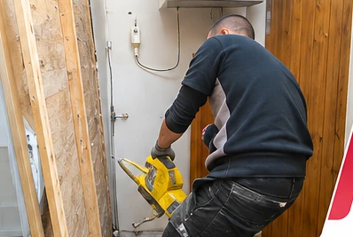
RÉNOVATION · SAVOIR-FAIRENos savoir-faire
Nos activités professionnelles
Un seul contact pour des travaux très variés, de l'intérieur aux extérieurs.
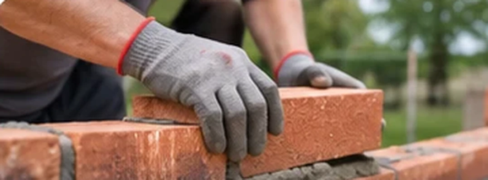
MaçonnerieDécouvrir cette activité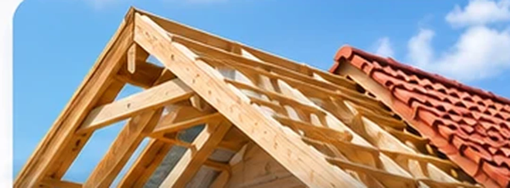
Charpenteet couvertureDécouvrir cette activité
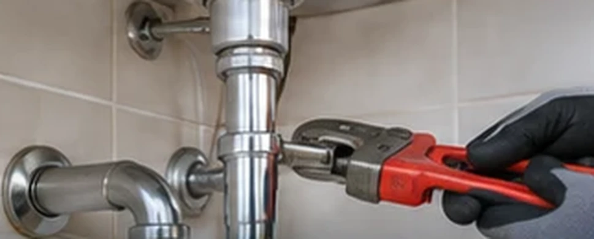
PlomberieDécouvrir cette activité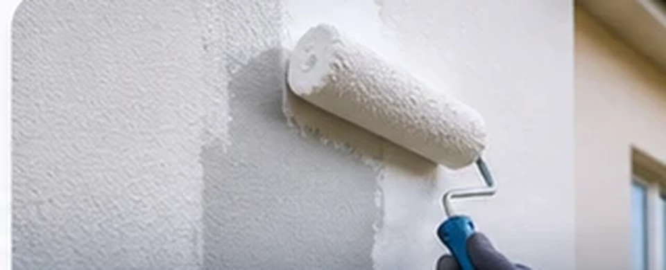
Peinture intérieureet extérieureDécouvrir cette activité
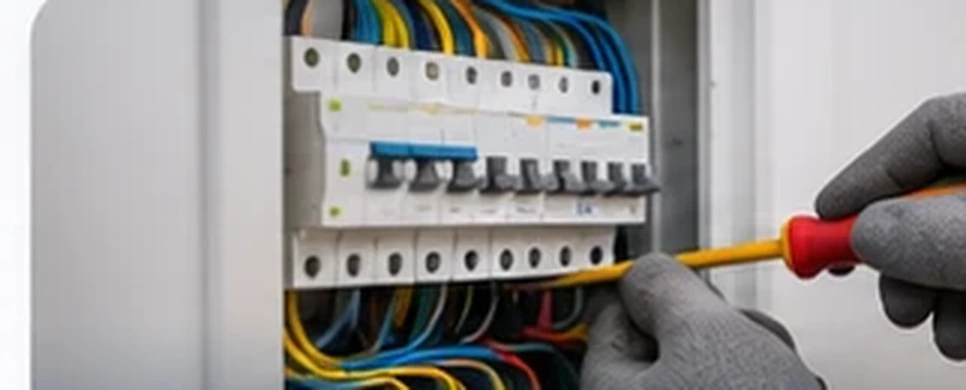
ÉlectricitéDécouvrir cette activité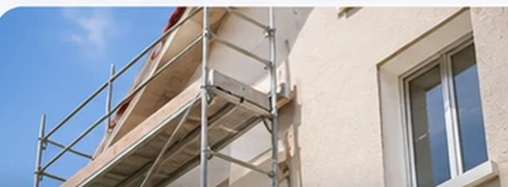
Ravalementde façadesDécouvrir cette activité
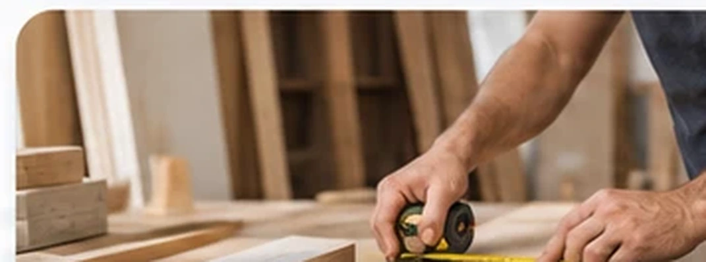
MenuiserieDécouvrir cette activité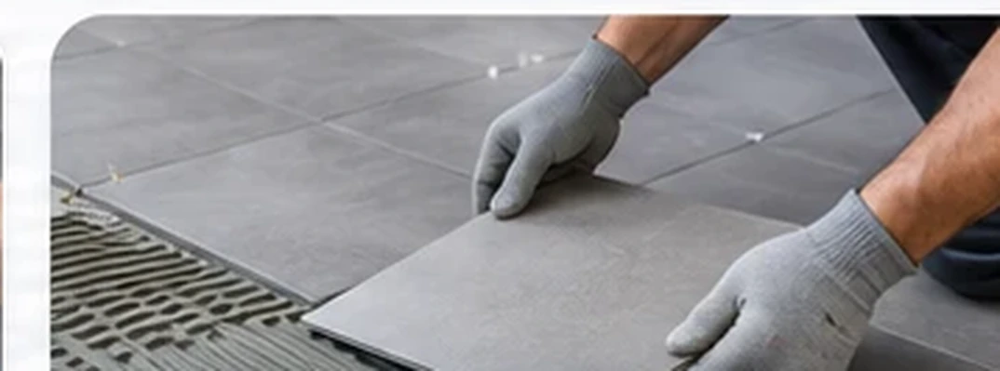
CarrelageDécouvrir cette activité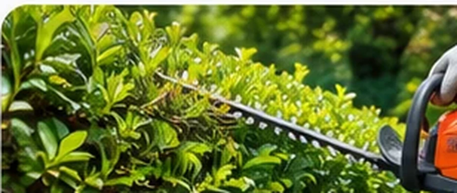
Entretiende jardinDécouvrir cette activité
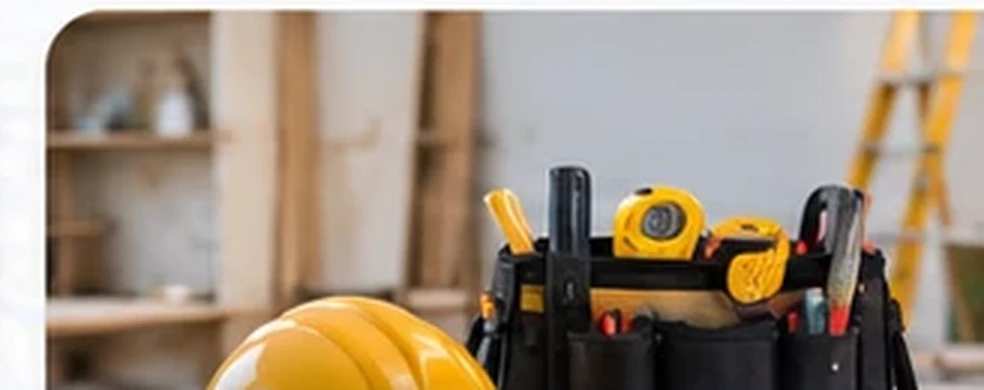
Et bien plusencoreDécouvrir cette activité
Découvrez nos savoir-faire
Des prestations adaptées à chaque projet
MS 22 multi-service · Saint-Brieuc
Maçonnerie
Travaux de maçonnerie pour vos projets de rénovation
Vous avez un projet qui demande des travaux de maçonnerie ? MS 22 multi-service propose cette activité parmi ses métiers du bâtiment, à Saint-Brieuc et dans sa zone d’intervention. Nous échangeons avec vous pour comprendre le contexte, les travaux attendus et les particularités de votre bâtiment.
Notre entreprise peut étudier votre demande dans le cadre de travaux intérieurs ou extérieurs. Un devis gratuit et personnalisé vous permet de connaître les interventions envisagées avant de prendre votre décision.
MS 22 multi-service · Saint-Brieuc
Charpente et couverture
Des travaux de charpente et de couverture étudiés selon votre bâtiment
La charpente et la couverture figurent parmi les activités de MS 22 multi-service. Pour un projet de rénovation, nous prenons connaissance de vos besoins et des éléments qui concernent votre toiture ou la structure existante.
Chaque demande nécessite une étude adaptée au chantier. Nous pouvons ainsi préparer une proposition en fonction des travaux souhaités, avec un devis gratuit.
MS 22 multi-service · Saint-Brieuc
Plomberie
La plomberie dans vos travaux de rénovation
La plomberie fait partie des métiers proposés par MS 22 multi-service. Lors d’une rénovation intérieure, il est souvent utile de considérer cette activité avec les autres travaux prévus, afin d’organiser au mieux votre projet.
Expliquez-nous les modifications ou interventions souhaitées : nous étudions votre demande et proposons un devis gratuit correspondant à vos besoins, après nos échanges.
MS 22 multi-service · Saint-Brieuc
Peinture intérieure et extérieure
Peinture intérieure et extérieure pour vos espaces
Vous souhaitez renouveler l’apparence de votre intérieur ou de vos surfaces extérieures ? MS 22 multi-service inclut la peinture intérieure et extérieure parmi ses activités professionnelles à Saint-Brieuc.
Nous prenons en compte votre projet de rénovation et les surfaces concernées pour établir une proposition adaptée. Contactez-nous pour discuter des travaux et demander un devis gratuit.
MS 22 multi-service · Saint-Brieuc
Électricité
L’électricité dans un projet de rénovation
L’électricité constitue l’une des activités de MS 22 multi-service. Dans le cadre d’un chantier intérieur, elle peut être envisagée avec les autres interventions prévues pour votre bâtiment.
Décrivez-nous votre projet et les travaux électriques que vous souhaitez faire étudier. Nous examinerons votre demande pour vous remettre un devis personnalisé et gratuit.
MS 22 multi-service · Saint-Brieuc
Ravalement de façades
Ravalement de façades et rénovation extérieure
L’aspect extérieur d’un bâtiment participe à son entretien et à sa présentation. MS 22 multi-service propose le ravalement de façades dans sa liste d’activités, en complément d’autres travaux extérieurs.
Nous pouvons échanger sur les surfaces concernées et les objectifs de votre chantier avant de vous proposer un devis gratuit, établi selon votre demande.
MS 22 multi-service · Saint-Brieuc
Carrelage
Carrelage et rénovation de vos surfaces
Le carrelage figure parmi les métiers du bâtiment proposés par MS 22 multi-service. Que votre demande s’inscrive dans une rénovation plus large ou qu’elle concerne une intervention ciblée, nous pouvons en discuter avec vous.
Présentez-nous les espaces concernés et les travaux envisagés. Nous préparons un devis gratuit selon les informations recueillies lors de nos échanges.
MS 22 multi-service · Saint-Brieuc
Entretien de jardin
Entretien de jardins et espaces extérieurs
Au-delà des travaux du bâtiment, MS 22 multi-service intervient aussi pour l’entretien des jardins. Le site d’origine cite notamment les pelouses et plus généralement l’entretien des espaces verts.
Nous étudions les besoins liés à votre jardin et aux extérieurs de votre propriété. Contactez-nous pour connaître les possibilités d’intervention et obtenir un devis gratuit.
MS 22 multi-service · Saint-Brieuc
Autres travaux
Un projet particulier ? Parlons-en
MS 22 multi-service réunit plusieurs métiers de la rénovation et de l’entretien extérieur. Si votre besoin ne correspond pas exactement à l’une des activités présentées, décrivez-nous votre projet.
Nous vous indiquerons si votre demande entre dans notre champ d’intervention. Nos devis sont gratuits et personnalisés, selon les prestations envisagées.
Notre accompagnement
Vos projets, nos différents savoir-faire.
Chez MS 22 multi-service, nous accompagnons vos projets de rénovation à Saint-Brieuc et dans les environs, qu’ils concernent votre intérieur, votre extérieur ou vos espaces verts. Notre activité réunit plusieurs métiers du bâtiment : maçonnerie, charpente et couverture, plomberie, menuiserie, électricité, peinture, ravalement de façades et carrelage. Cette diversité vous permet de présenter vos besoins à un seul interlocuteur et d’envisager les travaux dans leur ensemble. Nous étudions chaque demande selon les caractéristiques de votre projet, puis établissons un devis gratuit, adapté aux interventions souhaitées. Contactez-nous pour échanger sur vos idées et préparer votre prochaine rénovation en toute simplicité.
Nouveautés
Nos dernières réalisations
MS 22 multi-service propose désormais le remplacement de menuiseries sur mesure : fenêtres, portes et portes de garage.
Des solutions adaptées à vos besoins, toujours avec un devis gratuit.
Découvrir la menuiserie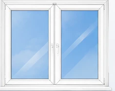
Pose de menuiserie
Changement de vos fenêtres et portes sur mesure, pour répondre à vos besoins d’aménagement et améliorer le confort de votre habitation.
- Fenêtres
- Portes
- Portes de garage
Nos chantiers
Quelques photos de nos chantiers
Parlons de votre projet
Un projet de rénovation ?
Contactez MS 22 multi-service pour un devis gratuit et adapté à vos besoins.